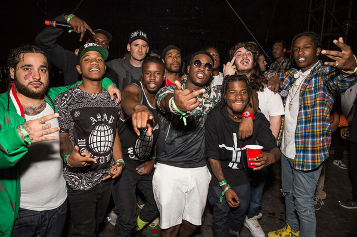

Biography
Wesly Amadi is a 20-year-old producer from Boise, Idaho. I grew up listening to popular music of the 90s/2000s and take influence from modern and recent hip-hop/r&b. I started taking a specialized interest in music around 10 years old. I've been making beats for around 3 years and my experience expands daily as a student at Loyola University New Orleans. I look forward to the opportunities I will get as time goes on and to the people, I meet on the way!
